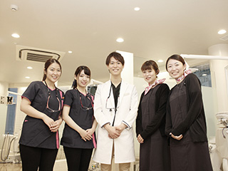
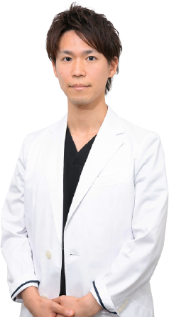

- ホーム
- 医院情報｜スタッフ紹介
Doctor歯科医師紹介

渋谷駅近くの「渋谷ルーブル歯科・矯正歯科」は、矯正歯科治療で歯並びをきれいに整えたい方、自然で美しい歯に見えるように歯科治療したい方、インプラント治療で失った歯の機能を回復したい方が安心して通える歯医者です。虫歯や歯周病治療などの一般歯科にも対応して、お口の健康をトータルサポートいたします。安心の歯科診療をご提供するスタッフをご紹介します。さらに院内もご案内します。
歯科医師紹介
院長 水谷 倫康（ミズタニ ノリヤス）
【略歴】
H26年 愛知学院大学歯学部 卒業
H26年 歯科医師免許証 取得
H27年 臨床研修修了 登録
H27年 エスカ歯科・矯正歯科 常勤医師
H27年 岡崎エルエル歯科・矯正歯科 非常勤医師
H27年 ファミリー歯科 矯正監修
H28年 エスカ歯科・矯正歯科 院長就任
R1年 渋谷ルーブル歯科・矯正歯科 院長就任
【所属団体】
インビザライン認定医
インコグニート舌側矯正認定医
月星歯科CEセミナーベーシックコース受講
日本顎咬合学会 会員
win舌側矯正システム認定医
osstemインプラントアドバンスコース受講
日本成人矯正学会 会員
理事長 小池 陵馬（コイケ リョウマ）
【略歴】
H16年 愛知県立岡崎高校 卒業
H16年 広島大学歯学部 入学
H22年 広島大学歯学部 卒業
H22年 歯科医師免許証 取得
H23年 臨床研修修了 登録
H23年 岡崎エルエル歯科・矯正歯科 副院長
H25年 エスカ歯科・矯正歯科 院長
H28年 医療法人清翔会 設立
H28年 理事長 就任
H28年 名古屋みなと歯科・矯正歯科 開院
H28年 とし歯科 矯正監修
【所属団体】
日本顎咬合学会認定医
インビザライン認定医
日本成人矯正学会
日本矯正学会
インコグニート舌側矯正認定医
名古屋市立大学口腔外科非常勤歯科医師
Tweed Pre-Tucson コース
大西 正嗣（オオニシ タダシ）
【略歴】
H14年 名古屋市立菊里高校 卒業
H15年 愛知学院大学歯学部 入学
H21年 愛知学院大学歯学部 卒業
H21年 歯科医師免許証 取得
H22年 臨床研修修了 登録
H23年 岡崎エルエル歯科・矯正歯科 開院
H25年 エスカ歯科・矯正歯科 非常勤医師
H28年 医療法人正翔会 設立
H28年 理事長 就任
H28年 葵デンタルデザインオフィス 開院
H28年 院長 兼務
【所属団体】
日本顎咬合学会認定医
インビザライン認定医
日本成人矯正学会
日本矯正学会
SHTA
インコグニート舌側矯正認定医
名古屋市立大学口腔外科非常勤歯科医師
Tweed Pre-Tucson コース
清水（シミズ）
【略歴】
H27年 昭和大学歯学部 卒業
H27年 歯科医師免許証 取得
H28年 臨床研修修了 登録
H28年 エスカ歯科・矯正歯科 常勤医師
H28年 岡崎エルエル歯科・矯正歯科 非常勤医師
H28年 名古屋みなと歯科・矯正歯科 非常勤医師
H31年 エスカ歯科・矯正歯科 副院長 就任
【略歴】
H27年 昭和大学歯学部 卒業
H27年 歯科医師免許証 取得
H28年 臨床研修修了 登録
H28年 エスカ歯科・矯正歯科 常勤医師
H28年 岡崎エルエル歯科・矯正歯科 非常勤医師
H28年 名古屋みなと歯科・矯正歯科 非常勤医師
H31年 エスカ歯科・矯正歯科 副院長 就任
星野 匡俊（ホシノ マサトシ）
【略歴】
H26年 愛知学院大学歯学部 卒業
H26年 歯科医師免許証 取得
H27年 臨床研修修了登録
H27年 エスカ歯科・矯正歯科 常勤医師
H27年 岡崎エルエル歯科・矯正歯科 非常勤医師
H28年 名古屋みなと歯科・矯正歯科 院長
【所属団体】
インビザライン認定医
WIN舌側矯正システム認定医
越知 正博（オチ マサヒロ）
【略歴】
H27年 愛知学院大学歯学部 卒業
H27年 歯科医師免許証 取得
H28年 臨床研修修了 登録
H28年 エスカ歯科・矯正歯科 常勤医師
H28年 岡崎エルエル歯科・矯正歯科 非常勤医師
H28年 名古屋みなと歯科・矯正歯科 非常勤医師
H30年 名駅アール歯科・矯正歯科 院長 就任
【所属団体】
インビザライン認定医
win舌側矯正システム認定医
Morita Practice Course Basic 受講
OSSTEM Implant Prosthetics T raining Seminar 受講
平田 貴大（ヒラタ タカヒロ）
【略歴】
H23年 愛知学院大学歯学部 卒業
H23年 歯科医師免許証 取得
H25年 臨床研修修了 登録
H25年 オカダ歯科クリニック 勤務医
H27年 岡崎エルエル歯科・矯正歯科 常勤医師
H27年 エスカ歯科・矯正歯科 非常勤医師
H28年 岡崎エルエル歯科・矯正歯科 院長
H28年 とし歯科 矯正監修
【所属団体】
インコグニート舌側矯正認定医
とし歯科 矯正監修
大森 直樹（オオモリ ナオキ）
【略歴】
H27年 愛知学院大学歯学部 卒業
H27年 歯科医師免許証 取得
H28年 臨床研修修了 登録
H28年 岡崎エルエル歯科・矯正歯科 常勤医師
H28年 エスカ歯科・矯正歯科 非常勤医師
H28年 名古屋みなと歯科・矯正歯科 非常勤医師
H29年 岡崎エルエル歯科・矯正歯科 副院長 就任
【所属団体】
ＷＩＮ舌側矯正システム 認定医
【医院情報】